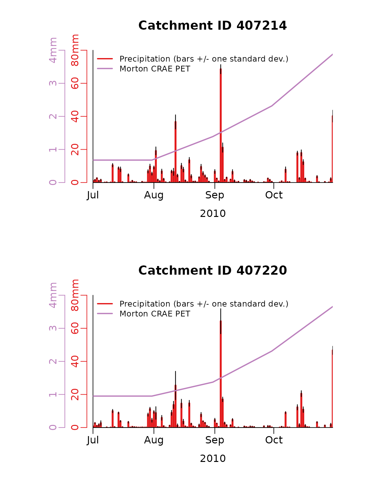
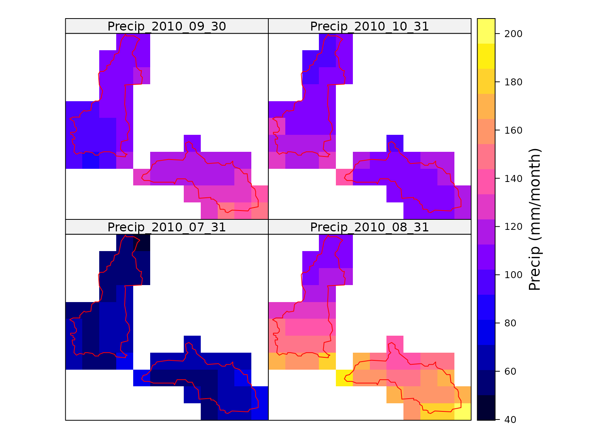
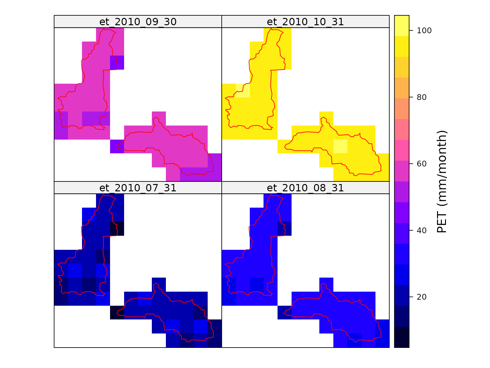
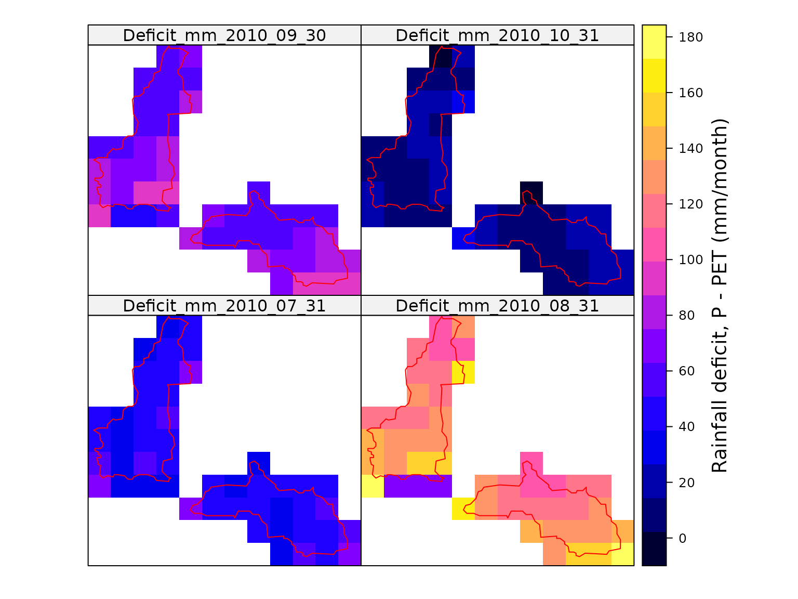
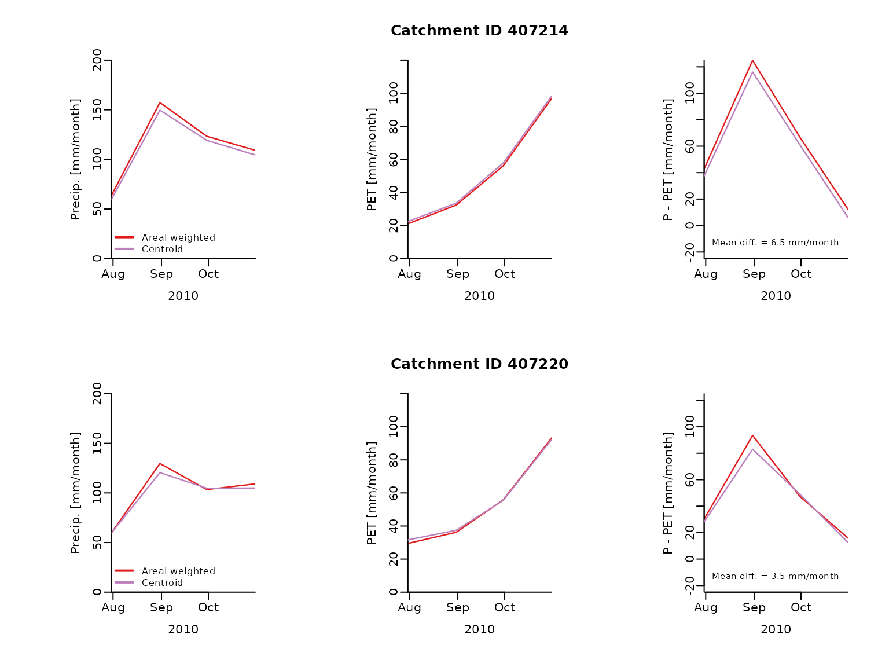

Extract daily area weighted PET and precipitation
Source:vignettes/C_Catchment_avg_ET_rainfall.Rmd
C_Catchment_avg_ET_rainfall.RmdLoad extra packages for the vignette
The mapping of the results below requires the following packages.
Make netCDF files
The first step is to create the netCDF file of the gridded data. Here grids are created for daily precipitation, daily minimum temperature, daily maximum temperature, daily vapour pressure deficit, daily solar radiation and only between the dates update.from and update.to. Importantly, the file (and those downloaded) are created in the working directory.
If the latter two dates were not input then data would be downloaded from 1/1/1900 to two days ago. The netCDF file contains grids of the daily data for all of Australia and is used below to extract data within the catchment boundaries of interest.
Often users run build.grids once to build netCDF data files that contain all variables over the entire record length (which requires ~5GB disk storage) and then use the netCDFs grids for multiple projects, rather than re-building the netCDF for each project. Also, if build.grids is run with the the netCDF file name pointing to existing files and updateFrom=NA then the netCDF files will be updated to two days ago.
First, let’s define the start and end dates for data grids and the file names.
date.from = as.Date("2010-07-01","%Y-%m-%d")
date.to = as.Date("2010-10-31","%Y-%m-%d")
ncdfFilename = tempfile(fileext='.nc')Next, let’s make the data grids over this period.
fname = build.grids(ncdfFilename = ncdfFilename,
updateFrom = date.from,
updateTo = date.to,
vars = c('tmax', 'tmin', 'precip', 'vprp', 'solarrad'))
#> ... Testing downloading of each variable.
#> Testing tmax grid data.
#> Testing tmin grid data.
#> Testing precip grid data.
#> Testing vprp grid data.
#> Testing solarrad grid data.
#> ... NetCDF file will be updated as follows:
#> - New variables to add: tmax tmin precip vprp solarrad
#> - Existing variables to modify: (none)
#> - Data will be updated from 2010-07-01 to 2010-10-31
#> ... Downloading data for each variable and importing to netcdf file:
#> Data construction FINISHED.
#> Summary of time points successfully imported (and errors).
#> Imported Errors
#> tmax 123 0
#> tmin 123 0
#> precip 123 0
#> vprp 123 0
#> solarrad 123 0
#> Total run time (DD:HH:MM:SS): 00:00:07:55Load a catchment boundary
Now that we have the meteorological data we can begin extracting data for two catchments. Here the catchment boundaries built into the package are used. However, shape files of polygons can easily be used once imported into R. Here the data is imported into the catchments variable.
data("catchments")Extract daily precipitation and PET data
Here the daily area weighted average precipitation and PET is extracted across the two catchments. The data is extracted from the netCDF file ncdfFilename between the dates extract.from and extract.to. The other BOMcatchr variables are extracted because they are need for the calculation of Morton’s PET. Note the netCDF files must be in the working directory or the full file path must be given.
Here Morton’s wet-environment areal evapotranspiration was estimated (other options are available). The use of Morton’s CREA formulation is defined by setting the ET.function variable to ‘ET.MortonCRAE’. The calculation of the areal wet environment PET is defined by setting Morton’s specific variable ET.Mortons.est to ‘wet areal ET’ (note, other options exist within BOMcatchr for both variables). Lastly, following McMahon et al, (2013), Morton’s PET is calculated at a monthly time step (not daily) to improve its reliability. The monthly estimate is then interpolated to daily.
The estimation of ET uses the evapotranspiration package. It requires a set of constants, which are loaded as follows.
data(constants,package='Evapotranspiration')The area weighted daily meteorological variables and PET can then be calculated as follows, given includes . Note, because only two months are being extracted, the default method to handle missing data and anomalies (e.g. Tmin > Tmax) during ET calculations is automatically changed from the default of to .
climateData.daily = extract.data(ncdfFilename=ncdfFilename,
extractFrom=date.from,
extractTo=date.to,
vars = c('tmax', 'tmin', 'precip', 'vprp', 'solarrad', 'et'),
locations=catchments,
temporal.timestep = 'daily',
temporal.function.name='sum',
spatial.function.name='var',
ET.function='ET.MortonCRAE',
ET.timestep = 'monthly',
ET.Mortons.est='wet areal ET',
ET.constants= constants)
#> Extraction data summary:
#> NetCDF climate data exists from 2010-07-01 to 2010-10-31
#> Data will be extracted from 2010-07-01 to 2010-10-31 at 2 locations
#> WARNING: The extraction duration is < 2 years and getET = TRUE.
#> Hence, ET.missing_method and ET.abnormal_method is changed to "neighbouring average".
#> Starting data extraction:
#> ... Building catchment weights for each grid.
#> Loading required namespace: ncdf4
#> ... Extracted DEM elevations from AWS (using tmax coordinate and a GRS80 ellipsoid).
#> Mosaicing & Projecting
#> Note: Elevation units are in meters
#> ... Starting to extract data across all variable and locations:
#> ... Linearly interpolating gaps
#> ... Backfilling dates prior to the start of observations
#> ... Calculate daily ET at each grid cell.
#> ... Calculating area weighted results at required time-step.
#> Data extraction FINISHED.
#> Total run time (DD:HH:MM:SS): 00:00:00:25Next time series of the extracted daily precipitation and PET for each catchment is plotted. The precipitation plots show both the area weighted estimate and the spatial variability on each day (as +/- one standard deviation).
par(mfrow=c(2,1), mar = c(5, 7.5, 4, 2.7) + 0.1)
# Loop through each catchment and plot the daily precipitation and PET.
for (i in 1:length(catchments$CatchID)) {
filt = climateData.daily$temporal.sum$Location.ID == catchments$CatchID[i]
# Convert year, month and day columns from extractions to a date.
climateData.daily.date = as.Date(paste0(climateData.daily$temporal.sum$year[filt], "-",
climateData.daily$temporal.sum$month[filt], "-",
climateData.daily$temporal.sum$day[filt]))
# Plot precipitation and standard deviation against observations
# ---------------------------------------------------------
max.y = max(climateData.daily$temporal.sum$precip[filt] +
sqrt(climateData.daily$spatial.var$precip[filt]))
# Precipitation
plot(climateData.daily.date,
climateData.daily$temporal.sum$precip[filt],
type = "h", col = "#e31a1c", lwd = 3, mgp = c(2, 0.5, 0),
main=paste('Catchment ID',catchments$CatchID[i]),
ylim = c(0, 80), ylab = "", xlab = "2010", xaxs = "i",
yaxt = "n", bty = "l", yaxs = "i")
axis(side = 2, mgp = c(2, 0.5, 0), line = 0.5, at = seq(from = 0, to = 80, by = 20),
labels = c("0", "20", "40", "60", "80mm"), col = "#e31a1c", col.axis = "#e31a1c")
# Standard deviation
for (j in 1:length(climateData.daily.date)) {
x.plot = rep(climateData.daily.date[j], 2)
y.plot = c(climateData.daily$temporal.sum$precip[filt][j] +
sqrt(climateData.daily$spatial.var$precip[filt][j]),
climateData.daily$temporal.sum$precip[filt][j] -
sqrt(climateData.daily$spatial.var$precip[filt][j]))
lines(x.plot, y.plot, col = "black", lwd = 1.2)
}
# Plot evap data.
par(new = TRUE)
plot(climateData.daily.date, climateData.daily$temporal.sum$et[filt],
col = "#bc80bd", lwd = 2, ylab = "", ylim = c(0, 4), lty = 1,
xlab = "", xaxs = "i", yaxt = "n", xaxt = "n", type = "l", bty = "n", yaxs = "i")
axis(side = 2, line = 2.3, mgp = c(2, 0.5, 0), labels = c("0", "1", "2", "3", "4mm"),
at = seq(from = 0, to = 4, by = 1), col = "#bc80bd", col.axis = "#bc80bd")
legend("topleft", cex = 0.8, lwd = 2, bty = "n", inset = c(0.01, -0.01),
lty = c(1, 1), pch = c(NA, NA),
col = c("#e31a1c", "#bc80bd"),
legend = c("Precipitation (bars +/- one standard dev.)", "Morton CRAE PET"), xpd = NA)
}
Extract and map monthly total precipitation and PET
The meteorological spatial data can also be extracted at the required timescale. Here the monthly total precipitation and PET across the two catchments is mapped.
To extract the spatial data, and not some statistic of the spatial data such as the sum, the variable spatial.function.name is set to ’’.
To extract the monthly totals, temporal.timestep is set to ‘monthly’ and temporal.function.name to ‘sum’. For the former, the options are daily, weekly, monthly, quarterly and annual. For the latter, any built-in function or user-defined function that accepts a single vector of data and returns a single number should work.
First let’s extract only precipitation.
PrecipData.monthly = extract.data(ncdfFilename=ncdfFilename,
extractFrom=date.from,
extractTo=date.to,
vars = c('precip'),
locations=catchments,
spatial.function.name = '',
temporal.timestep = 'monthly',
temporal.function.name = 'sum')
#> Extraction data summary:
#> NetCDF climate data exists from 2010-07-01 to 2010-10-31
#> Data will be extracted from 2010-07-01 to 2010-10-31 at 2 locations
#> Starting data extraction:
#> ... Building catchment weights for each grid.
#> ... Starting to extract data across all variable and locations:
#> ... Linearly interpolating gaps
#> ... Backfilling dates prior to the start of observations
#> ... Calculating area weighted results at required time-step.
#> Data extraction FINISHED.
#> Total run time (DD:HH:MM:SS): 00:00:00:03The monthly total precipitation can then be mapped to show the spatial variability.
v = list("sp.polygons", catchments, col = "red",first=FALSE)
colInd = which(startsWith(colnames(PrecipData.monthly@data), "precip_"))
sp::spplot(PrecipData.monthly,colInd, sp.layout = list(v),
colorkey = list(title = "Precip (mm/month)"))
Next let’s extract all variables and calculate the PET and then map.
metData.monthly = extract.data(ncdfFilename=ncdfFilename,
extractFrom=date.from,
extractTo=date.to,
vars = c('tmax', 'tmin', 'precip', 'vprp', 'solarrad', 'et'),
locations=catchments,
spatial.function.name = '',
temporal.timestep = 'monthly',
temporal.function.name = 'sum',
ET.function = 'ET.MortonCRAE',
ET.timestep = 'monthly',
ET.Mortons.est='wet areal ET',
ET.constants= constants)
#> Extraction data summary:
#> NetCDF climate data exists from 2010-07-01 to 2010-10-31
#> Data will be extracted from 2010-07-01 to 2010-10-31 at 2 locations
#> WARNING: The extraction duration is < 2 years and getET = TRUE.
#> Hence, ET.missing_method and ET.abnormal_method is changed to "neighbouring average".
#> Starting data extraction:
#> ... Building catchment weights for each grid.
#> ... Extracted DEM elevations from AWS (using tmax coordinate and a GRS80 ellipsoid).
#> Mosaicing & Projecting
#> Note: Elevation units are in meters
#> ... Starting to extract data across all variable and locations:
#> ... Linearly interpolating gaps
#> ... Backfilling dates prior to the start of observations
#> ... Calculate daily ET at each grid cell.
#> ... Calculating area weighted results at required time-step.
#> Data extraction FINISHED.
#> Total run time (DD:HH:MM:SS): 00:00:00:24The monthly total PET can then be mapped to show the spatial variability. The map below shows considerable spatial variability. Much of this variability would not emerges if only point PET at the catchment centroid was used.
colInd = which(startsWith(colnames(metData.monthly@data), "et_"))
sp::spplot(metData.monthly,colInd, sp.layout = list(v),
colorkey = list(title = "PET (mm/month)"))
Now that we have maps of the rainfall and PET, we can calculate and map the monthly rainfall deficit.
colnames.all = colnames(metData.monthly@data)
colInd.P = which(startsWith(colnames.all, "precip_"))
colInd.PET = which(startsWith(colnames.all, "et_"))
for (i in 1:length(colInd.P)) {
ind.P = colInd.P[i]
ind.PET = colInd.PET[i]
colname.P = colnames.all[ ind.P ]
colname.tmp = sub('precip_','Deficit_mm_',colname.P)
metData.monthly[[colname.tmp]] = metData.monthly[[ind.P]] - metData.monthly[[ind.PET]]
}
colInd = which(startsWith(colnames(metData.monthly@data), "Deficit_mm_"))
sp::spplot(metData.monthly,colInd, sp.layout = list(v),
colorkey = list(title = "Rainfall deficit, P - PET (mm/month)"))
Point versus area weighted rainfall deficit
Here area weighted catchment rainfall deficit estimates are compared to point estimates at the centtoid of each catchment.
First, the centroids are estimated using the simple bounds box method.
centroid = matrix(0,2,2)
extn = extent(catchments[1,])
centroid[1,1] = extn@xmin + (extn@xmax - extn@xmin)/2
centroid[1,2] = extn@ymin + (extn@ymax - extn@ymin)/2
extn = extent(catchments[2,])
centroid[2,1] = extn@xmin + (extn@xmax - extn@xmin)/2
centroid[2,2] = extn@ymin + (extn@ymax - extn@ymin)/2Then, the coordinates are converted to a spatial object and set projection to GDA94.
coordinates.data = data.frame( ID = catchments$CatchID,
Longitude = centroid[,1],
Latitude = centroid[,2])
sp::coordinates(coordinates.data) <- ~Longitude + Latitude
sp::proj4string(coordinates.data) = '+proj=longlat +ellps=GRS80 +no_defs'Next, the meteorological data and PET are derived using both the area weighted approach and centroids.
metData.monthly.weighted = extract.data(ncdfFilename=ncdfFilename,
extractFrom=date.from,
extractTo=date.to,
vars = c('tmax', 'tmin', 'precip', 'vprp', 'solarrad', 'et'),
locations=catchments,
spatial.function.name = 'sum',
temporal.timestep = 'monthly',
temporal.function.name = 'sum',
ET.function='ET.MortonCRAE',
ET.timestep = 'monthly',
ET.Mortons.est='wet areal ET',
ET.constants= constants)
#> Extraction data summary:
#> NetCDF climate data exists from 2010-07-01 to 2010-10-31
#> Data will be extracted from 2010-07-01 to 2010-10-31 at 2 locations
#> WARNING: The extraction duration is < 2 years and getET = TRUE.
#> Hence, ET.missing_method and ET.abnormal_method is changed to "neighbouring average".
#> Starting data extraction:
#> ... Building catchment weights for each grid.
#> ... Extracted DEM elevations from AWS (using tmax coordinate and a GRS80 ellipsoid).
#> Mosaicing & Projecting
#> Note: Elevation units are in meters
#> ... Starting to extract data across all variable and locations:
#> ... Linearly interpolating gaps
#> ... Backfilling dates prior to the start of observations
#> ... Calculate daily ET at each grid cell.
#> ... Calculating area weighted results at required time-step.
#> Data extraction FINISHED.
#> Total run time (DD:HH:MM:SS): 00:00:00:24
metData.monthly.centroid = extract.data(ncdfFilename=ncdfFilename,
extractFrom=date.from,
extractTo=date.to,
vars = c('tmax', 'tmin', 'precip', 'vprp', 'solarrad', 'et'),
locations=coordinates.data,
temporal.timestep = 'monthly',
temporal.function.name = 'sum',
ET.function='ET.MortonCRAE',
ET.timestep = 'monthly',
ET.Mortons.est='wet areal ET',
ET.constants= constants)
#> Extraction data summary:
#> NetCDF climate data exists from 2010-07-01 to 2010-10-31
#> Data will be extracted from 2010-07-01 to 2010-10-31 at 2 locations
#> WARNING: The extraction duration is < 2 years and getET = TRUE.
#> Hence, ET.missing_method and ET.abnormal_method is changed to "neighbouring average".
#> Starting data extraction:
#> ... Building catchment weights for each grid.
#> ... Extracted DEM elevations from AWS (using tmax coordinate and a GRS80 ellipsoid).
#> Mosaicing & Projecting
#> Note: Elevation units are in meters
#> ... Starting to extract data across all variable and locations:
#> ... Linearly interpolating gaps
#> ... Backfilling dates prior to the start of observations
#> ... Calculate daily ET at each grid cell.
#> ... Calculating area weighted results at required time-step.
#> Data extraction FINISHED.
#> Total run time (DD:HH:MM:SS): 00:00:00:37Now let’s compare the two estimates of precipitation, PET and rainfall deficit. The right most plots below show the rainfall deficit. It shows that using centroid estimate introduces errors of 6 to 21 mm/month.
par(mfrow=c(2,3), mar = c(5, 7.5, 4, 2.7) + 0.1)
# Loop through each catchment and plot the daily precipitation and PET.
for (i in 1:length(catchments$CatchID)) {
filt = metData.monthly.weighted$temporal.sum$Location.ID == catchments$CatchID[i]
# Convert year, month and day columns from extractions to a date.
metData.date = as.Date(paste0(metData.monthly.weighted$temporal.sum$year[filt], "-",
metData.monthly.weighted$temporal.sum$month[filt], "-",
metData.monthly.weighted$temporal.sum$day[filt]))
# Precipitation
plot(x = metData.date,
y = metData.monthly.weighted$temporal.sum$precip[filt],
type = "l",
col = "#e31a1c",
lwd = 1.2,
mgp = c(2, 0.5, 0),
ylim = c(0, 200),
ylab = "Precip. [mm/month]",
xlab = "2010",
xaxs = "i",
bty = "l",
yaxs = "i")
lines(x = metData.date,
y = metData.monthly.centroid$precip[filt],
col = "#bc80bd",
lwd = 1.2)
legend("bottomleft",
lwd = 2,
bty = "n",
inset = c(0.01, -0.01),
lty = c(1, 1), pch = c(NA, NA),
col = c("#e31a1c", "#bc80bd"),
legend = c("Areal weighted", "Centroid"),
xpd = NA)
# PET
plot(x = metData.date,
y = metData.monthly.weighted$temporal.sum$et[filt],
type = "l",
col = "#e31a1c",
lwd = 1.2,
mgp = c(2, 0.5, 0),
main=paste('Catchment ID',catchments$CatchID[i]),
ylim = c(0, 120),
ylab = "PET [mm/month]",
xlab = "2010", xaxs = "i",
bty = "l",
yaxs = "i")
lines(metData.date, metData.monthly.centroid$et[filt],
col = "#bc80bd", lwd = 1.2)
# Deficit
precip.deficit.weighted = metData.monthly.weighted$temporal.sum$precip[filt] -
metData.monthly.weighted$temporal.sum$et[filt]
plot(x = metData.date,
y = precip.deficit.weighted,
type = "l",
col = "#e31a1c",
lwd = 1.2,
mgp = c(2, 0.5, 0),
ylim = c(0, 140),
ylab = "P - PET [mm/month]",
xlab = "2010",
xaxs = "i",
bty = "l",
yaxs = "i")
precip.deficit.centroid = metData.monthly.centroid$precip[filt] -
metData.monthly.centroid$et[filt]
lines(metData.date, precip.deficit.centroid, col = "#bc80bd", lwd = 1.2)
text(x = par("usr")[1]+5,
y = par("usr")[3]+10,
labels = paste('Mean diff. =',round(mean(precip.deficit.weighted -
precip.deficit.centroid),1),'mm/month'),
adj = c(0, 0))
}